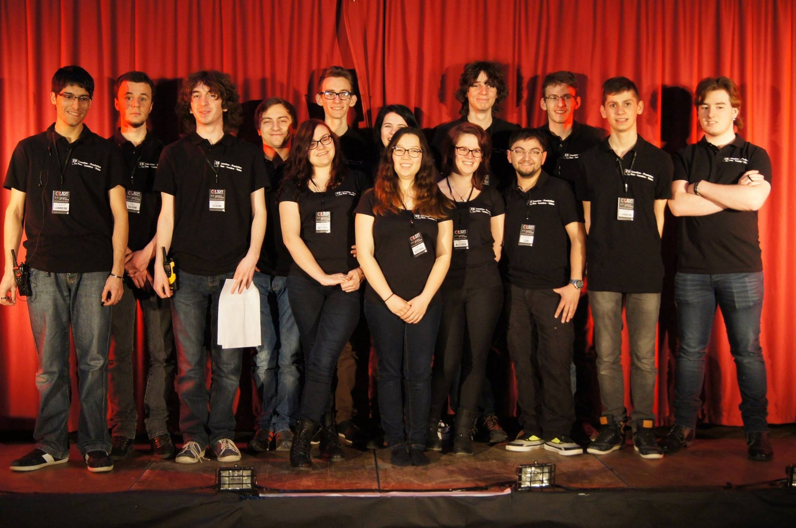

Concours d'illuminations et de décorations de Noël 2015
À l'initiative de la toute jeune association de Beaumont 2D Prod, présidée par Dylan Plainchamp, les « Lueurs de Noël » vont éclairer les différents quartiers de la commune et des environs. En effet, un concours d'illuminations et de décorations de Noël est ouvert aux particuliers comme aux commerçants des communes de Beaumont, Colombiers, Marigny-Brizay, Dissay, Naintré et Saint-Cyr.
Le concours prendra en compte l'originalité, la composition, l'harmonie des couleurs, la qualité de l'agencement, l'esthétisme et la visibilité depuis la rue. Il comprendra deux catégories : maisons avec ou sans jardin et appartements (fenêtres et ou balcons) visibles de la rue et de nuit. Il sera jugé sur place par les membres de l'association.
Inscription en ligne avant lundi 14 décembre sur
dd-prod.dimdo.com.
Renseignements au 07.81.73.76.28.

La 2D prod
Une association a vu le jour récemment dans la commune : « 2D Prod ». Son but ? Organiser des animations artistiques (concerts, spectacles, karaokés), soit en son nom propre, soit en complément de manifestations sur la commune et ses alentours. L'association gère en parallèle une équipe de techniciens, acteurs et magiciens.
Déjà bien rodée, l'association – dont le siège social est à la
mairie – est à l'origine du dernier spectacle-création d'illusion de
l'association MJM cabaret-club.
C'est elle, également, qui a assuréé la sonorisation de la 557e foire
aux biquions de Beaumont le 26 avril 2015.
Le bureau est composé ainsi :
- Président : Dylan Plainchamp
- Vice-président : Dennis Beauchêne
- Secrétaire : Alexiane Massé
- Trésorier : Benoît Gougeon
Spectacle Cabaret à Beaumont

Le MJM cabaret-club a été créé en 2013. Cette association
beaumontoise a une histoire liée à la commune.
Tout a commencé avec l'amitié qui relie trois communes frontalières
avec l'Allemagne, Grindorff, Bizing et Hastroff, où, pendant la
guerre 39-45, de nombreux habitants ont dû fuir impérativement leurs
maisons et trouver refuge sur la commune. Bien des années plus tard,
après un retour au pays et grâce à la persévérance de quelques-uns,
les relations se sont renouées. Au cours de l'une de ces rencontres
d'amitiés, un spectacle de magie est né.
Karaoké D'Halloween
Avec l'association des jeunes de Beaumont « N2AB », vendredi 1er
novembre 2014 à partir de 20h30, salle de l'ancienne cantine.
Entrée 2€, gratuite pour les moins de 12 ans. Buvette, crêpes.
Magie avec les jeunes du "N2AB"

Le public était très nombreux pour découvrir les jeunes de l'association N2AB de Beaumont, qui, devant un public de tous âges, a présenté un spectacle de magie. C'est à l'initiative d'une vingtaine de membres de cette association, avec à leur tête Dylan PLAINCHAMPS, qu'a été organisée cette soirée pleine de surprises. Des histoires et des tours à découvrir par des adolescents qui ont déjà plus d'un tour dans leur sac.
Succès pour le cabaret des habitants

Ils sont tous des bons vivants et aiment la plaisanterie, avec leur
présidente:
Josette RÉVEILLAULT.
MJM cabaret est bien l'association qui manquait sur Beaumont.
Dans le cadre d'un rapprochement entre Beaumont et plusieurs
villages de Moselle, au cours d'une visite organisée par les
Mosellans sur notre commune, une petite troupe d'habitants avait
élaborée un spectacle type cabaret pour animer la soirée d'accueil
du samedi. Une première devant les invités en délire, qui a donnée
l'envoi et la création de cette association MJM. C'est donc samedi
soir que cette première gratuite, devant un nombreux public en
partenariat avec l'association des jeunes de Beaumont, (N2AB) a
eu lieu. Nos jeunes Beaumontois, avec une dizaine de personnes, ont
assurés professionnellement la logistique, éclairage et sonorisation.
Pour un spectacle de qualité. Chacun est reparti tard dans la soirée
en espérant revoir cette petite troupe originale lors d'une prochaine
représentation dans un spectacle proposé aussi diversifié.
Un concert offert aux habitants
C'est une première sur le parvis de la salle des fêtes de Beaumont : la municipalité a offert un concert gratuit aux Beaumontois et aux amoureux de jazz. Avec la participation des jeunes de l'association N2AB (sonorisation-éclairage) aidés par MJM Cabaret. Un déluge de musique interprétée par le groupe Ladybird Jazz'tet a conquis le public, envoûté par cette musique de la Nouvelle Orléans.